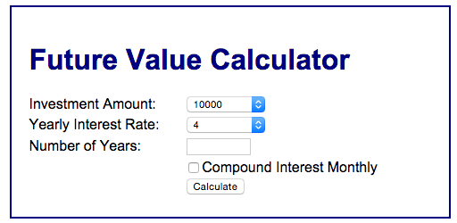
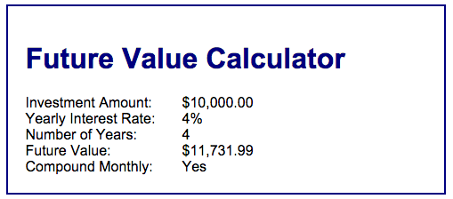

Ch. 7 Enhancement
Purpose
Each enhancement provides an opportunity to solve problems and apply the concepts covered in the current and previous topics.
Assumptions
This enhancement requires that you start where exercise 7-2 ended. It is anticipated that you will have completed the exercise on your own so that you are familiar with the application and how it operates. You can begin the enhancement by using the exercise solution code provided by the publisher, but using your own working code is encouraged.
Make a Copy
Prior to beginning the enhancement, make a copy of the finished exercise folder and paste it to a homework area in your site. Rename the pasted folder to represent the enhancement. Do all work on the enhancement in this location. Do NOT overwrite your chapter exercise doing the enhancement. Keep them separate.
Application Functionality
The Future Value application will be enhanced by adding two additional features:
- Prior to beginning this enhancement, you will need to make a copy of the exercise 7-2 file and convert the copy to use a M-V-C approach. This will require you to separate logic and operation from view. All logic should be placed and function in a controller (named index.php) while interactions (forms and confirmations) should be placed in one or more views with names of your own choosing. This application requires no database interaction, so no model will be required.
- Add a check box at the bottom of the form view that says: “Compound Interest Monthly”. If this box is checked, the interest should be calculated monthly instead of yearly, so you need to change the Future Value calculation to provide for that. An example of this is shown in this illustration:
 - On the confirmation view, display some text that indicates whether the interest is being calculated monthly or yearly. An example of this is shown in this illustration:

Submission
- Build and test your code in the local development environment.
- Check your work to insure that it is operating correctly.
- When satisfied that the code is operational, upload the enhancement folder to the remote production server.
- Create a link from your exercises page to the index page in the enhancement folder and test that it works.
- Fully test the enhancement application for operation on the production server. Correct any errors that are found.
- When done, you should zip your enhancement folder and submit the zip file to the code submission dropbox in this week's module.
Grading Matrix
- MVC: Controller contains all logic, flow control and calculations: 6 points in objective 3
- MVC: view(s) exist and are operational to provide form for inputs and confirmation of completed calculations: 6 points in objective 3
- MVC: the application moves seamlessly through the controller and views and works as expected: 6 points in objective 3
- Application: Calculation works to include monthly interest compounding: 5 points in objective 2
- Application: Calculation is correct for either calculation (yearly or monthly) interest compounding: 5 points in objective 2
- Application: Confirmation displays if interest is compounded monthly or not: 5 points in objective 2
Enhancement Value
- Objective 2: 15 points
- Objective 3: 18 points